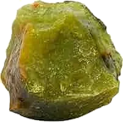

Mineral Grimoire
 Green Opal
Green Opal
Appearance
Green Opal appears as green opaque, resin-like stone.
Origin
Found in various locations including Australia and Peru. Availability varies.
Attributes
Green Opal is particularly useful for overcoming chronic sickness and excessive mucus. It gives support and vitality during convalescence. This gentle opal carries the healing energies of nature and connects you to the heart chakra for emotional healing and balance.
Healing
Green Opal is beneficial for chronic conditions, respiratory issues, and supporting the immune system during recovery periods. It may assist with excessive mucus production and support overall vitality.
Position
Hold, place or position as appropriate. Disperse gem essence around the aura.
Spellworking
Green Opal combines opal's psychic properties with the heart-healing energy of green stones. Use it for emotional healing, connecting with nature, and supporting recovery from illness. Like all green stones, it attunes you to nature spirits and promotes heart chakra balance.